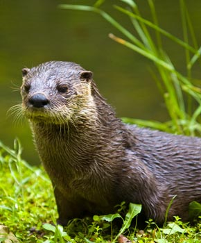

Estos son algunos de los habitantes del parque
La nutria europea o palertica (lutra lutra) es un mamifero carnivoro de habitat acuatico. Se alimenta de peces, ranas y pequeñas presas que caza en el rio. Cerca de sus lugares de cobijo, podremos ver toboganes que crean para llegar rapidamente al agua.
El buitre leonado (Gyps fulvus) es un ave rapaz, una de las mayores que puede encontrarse en la Peninsula Iberica. Su alimentacion principal es la carroña, que localiza con su aguda vista.
La gineta (Genetta genetta) es una especie de mamifero carnivoro. Son grandes trepadoras, muy agiles y grandes cazadores de pequeños animales. Aunque qtambien se alimentan de los frutos del bosque que se pueden encontrar en el parque.